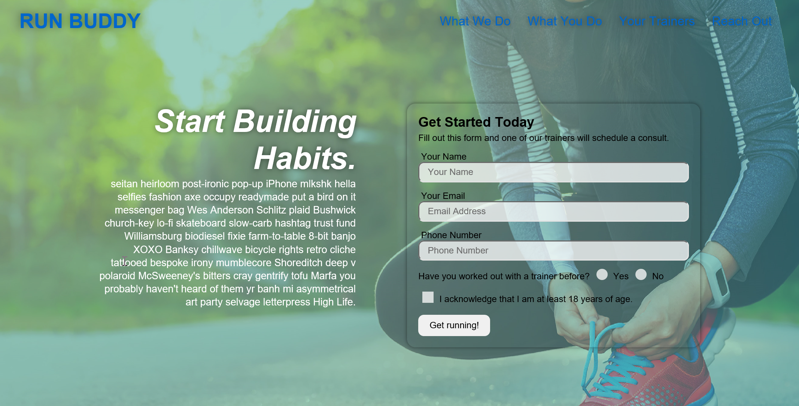
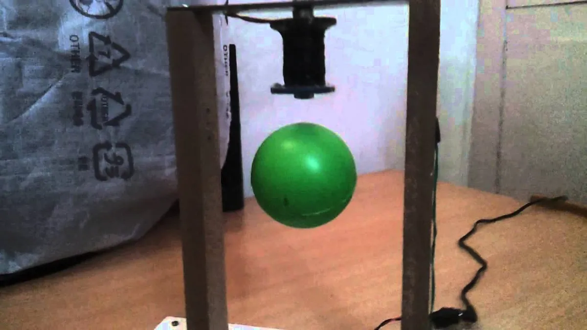
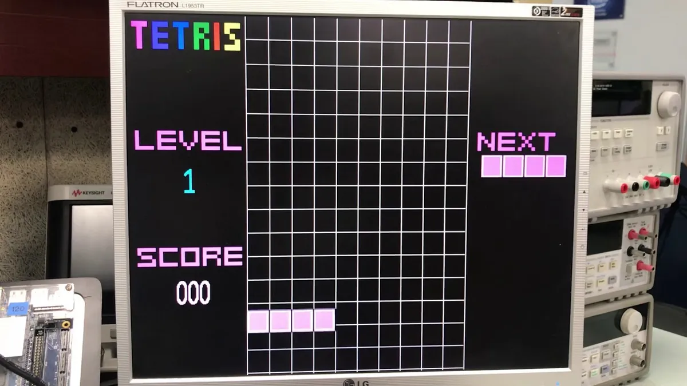

Thomas G. Woods Personal Portfolio
A Future Frontend Web Developer
A Future Frontend Web Developer
Hello and welcome to the Thomas G. Woods professional profiolio! In this site you will see a little bit about myself, my education, my Projects, my experience and my future goals. A background about myself is I am from Long Island, New York. I studied my undergrad at the State University of New York, University at Buffalo. I got a degree in Business Administration and a concentration in Managent Information Systems. I swam on the club swim team, played water polo and Vice President of a professional Co-Ed Business Fraternity called Alpha Kappa Psi. After college I decided to persue the FDNY on my childhood dream of being a Firefighter, however due to the pandemic of Covid-19, this dream had to be put on hold. As now we adjust due to various obstacles and challenges life throws at us, I find myself here studing at Universtiy of North Carolina Chapel Hill Full Stack Development program. Be sure to check out my porfiolio and reach out to me with any questions or information with my social links below. Thank you!
Thomas Woods a web developer is a programmer who specializes in, or is specifically engaged in and the development of World Wide Web applications.
1.) Project #1: Run Buddy
2.) Future Project #2
3.)Future Project #3
